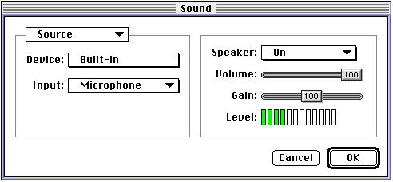

Legacy Document
Important: This document is part of the Legacy section of the ADC Reference Library. This information should not be used for new development.
Current information on this Reference Library topic can be found here:
ADC Home > Reference Library > Technical Notes > Legacy Documents > Hardware & Drivers >
Important: This document is part of the Legacy section of the ADC Reference Library. This information should not be used for new development.
Current information on this Reference Library topic can be found here:
|
The little known features of the Sound ManagerThe Sound Manager features that this Technote talks about are:Multiple Sound Output channels How to output more than just a stereo sound. Using the techniques talked about here an application can simultaneously output sound on as many channels as the Macintosh has. Multiple Sound Input ChannelsHow to record more than just a stereo sound. Using the techniques talked about here, an application can simultaneously record sound via as many input sources as the Macintosh has. Volume and PanningHow you can perform snazzy audio effects. Monitoring a Sound ChannelHow to use sound components to monitor the sound output level of a particular sound channel. Multiple Sound Output ChannelsThe Sound Manager has supported this starting with Sound Manager 3.0 which shipped with System 7.0. Inside Macintosh: Sound page 2-128 mentions this feature but doesn't describe how it is used. When you call The use of The First, you have to find the component instance of the output component you wish to use (this example finds the AIFF Writer sample output component):
A generic routine to find all sound output components such as:
would be used to present the user with a list of sound output channels so that they could output multi-channel (greater than 2 channel) sounds without the sound having to be mixed down to two channels. Now, all that is left to do is to make a new sound channel which will use the selected output device:
This is all there is to it. Whenever a sound is played through So, what does a developer of multiple-channel hardware have to do to allow
the use of the Not much. All that has to be done is to make an output component for each pair of output channels the hardware supports. If your hardware has only two channels, one output component is all that is needed. If your hardware has 20 output channels, 10 output components would be required. I can almost hear developers now: "Ten output components?!? Are you crazy?!?" No. Because of the reusability inherent to components, all that is really
required is ten ' The output component should be written in such a way that the actual hardware channels it outputs to are abstracted: that way, one code base can talk to all available channels. The output component just looks at itself at register time to determine which output channels it controls and saves this information in its globals. The additional code required is very minor: just enough code to keep track of which channels to output on. Note:You can get the Speech Manager to talk through an optional output channel as well. Call NewSpeechChannel as you normally would and then call
SetSpeechInfo with the soSoundOutput selector and the component
instance of
the output component:
Multiple Sound Input ChannelsThis works in much the same way as multiple sound output channels. The difference is, with sound input, a driver is required rather than a component. Because an application can open as many sound input drivers as are available,
all that an application must do is call The Sound Manager provides a call which allows a developer to easily enumerate all the available sound input drivers.
By pass an index starting at one (1) and incrementing it until an error is returned, you can quickly and easily build a list of all available sound input drivers. The QuickTime WayYou can also simply use, QuickTime to do your recording by using the Sequence Grabber to set the input source and do the recording. This code will bring up the QuickTime sequence grabber sound input panel:
 One of the nice features of using QuickTime to record sounds is that QuickTime will rate: convert a sound for you, so that you can effectively record at any arbitrary sample rate, instead of being limited to recording at the sample rates that the specific sound input driver offers. Making multiple sound input drivers for a hardware vendor is a little more work for the developer, who has to completely duplicate the driver: but that is what is required. Volume and PanningAdjusting the volume of a sound playing through the Sound Manager
can be done with
The left and right volumes are actually 16-bit fixed point numbers.
Like their 32-bit counterpart, the high 8 bits are the integer portion
of the volume and the low 8 bits are the fractional portion of the volume.
For example, a volume setting of A timed sequence of such calls with increasing values for the left volume and decreasing values for the right volume would make the sound pan from left to right. Some developers may be asking, "What happens if I set the volume for a channel
above The QuickTime WayAnother (probably better) way to control the volume and panning of sounds is to use QuickTime, The utility knife. Using QuickTime 2.1 modifiers track allows you to play sounds with complex effects. Tween Media handlersUsing the Tween Media handlers supplied by QuickTime 2.5, developers only need to specify the start and stop volume values for each sound channel; the Tween component generates all the intermediate volume values. This is in contrast with QuickTime 2.1, which did not have the Tween Media handlers; volume pans would have to be done with numerous discrete values. The Tween Media handlers simplify things by allowing the developer to simply specify start and stop values; the Tween Media handler takes care of coming up with the correct discrete value as the movie (sound) progresses. For more information about how to use Tween Media handlers, see chapter 13 of the "Developer's Guide: QuickTime for Macintosh version 2.5". Modifier tracks are talked about in "Developer's Guide: QuickTime for Macintosh version 2.5" starting on page 1-21. Monitoring a Sound ChannelSome developers wish to monitor sound output channels for various purposes, such as level metering. In the past, such an activity was very difficult because there is no easy way to get the Sound Manager's buffer; you had to guess where you were in the currently playing sound. Sound Manager 3.2.1 helps to solve this problem by allowing users to install pre-mixer components. These are components that are installed in the component chain right before the Apple Mixer component. A pre-mixer component sees the converted sound data from the channel it is installed on. That is, it sees the uncompressed, rate-converted, channel-converted, and size-converted data that the Apple Mixer is going to mix in with the other currently playing sounds. Currently, there is no way to install a post-mixer component which would see the mixed result of all sound channels. Well, actually there is, they are called sound output components. Writing a pre-mixer component is just like writing any other sound component see Inside Macintosh: Sound chapter 4 for the required selectors a sound component must support. To install a pre-mixer component, you use a new This sample function shows how to create a simple sound channel with a specific pre-mixer component installed on that sound channel.
To send and receive information to and from your pre-mixer component,
use the
Significant RestrictionThere is one significant restriction on pre-mixer components -- they cannot increase the length of the sound. This is an important restriction if you happen to be writing a reverb or fade component. In order for these types of effects to work correctly, the sounds that are played must have long silent endings that the component can replace with its effect. A pre-mixer component can shorten the length of a sound, but it cannot increase it. SummaryThese are some of the lesser known features of the Sound Manager. Now that you know them, I hope you will be able to take advantage of them and produce some of the best sounding applications on the planet. ReferencesTechnote 1048: Some Sound Advice: Getting the Most Out of the Sound Manager Downloadables
|
|